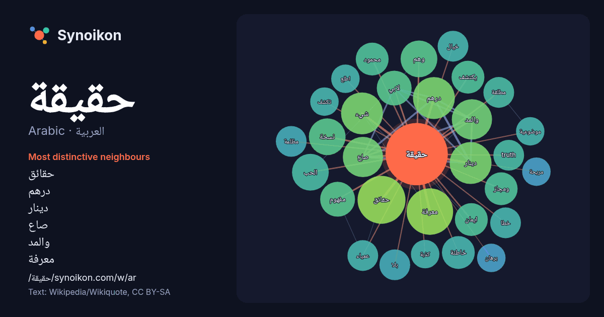

العربية · Arabic · popular word
حقيقة
“truth” · The words found around it in 693 instances from Arabic Wikipedia, Wikiquote.

Most distinctive neighbours
- حقائق 16×
- درهم 13×
- دينار 13×
- صاع 13×
- والمد 13×
- معرفة 11×
- لابي 9.7×
- ومجاز 9.0×
- الحب 8.9×
- يكتشف 8.5×
- خاطئة 8.3×
- شيء 8.3×
- truth 8.0×
- عمياء 7.9×
- وهم 7.8×
- ايمان 7.6×
- مظلمة 7.5×
- مطلقة 7.3×
- كذبة 6.9×
- اطلع 6.9×
× = how many times more often than in general Arabic Wikipedia text.
Most frequent neighbours
- حياة 18
- حقائق 17
- معرفة 16
- موقع 15
- امر 14
- كتاب 14
- انسان 13
- بحث 13
- درهم 13
- دينار 13
- شيء 13
- فيلم 13
- وجود 13
- صاع 12
- والمد 12
- علم 11
- ولكن 11
- الحب 10
- الله 10
- تكون 10
In context
- وجود حقيقة موضوعية، بل ميّز بين المعرفة الحقيقية والمعرفة التي تم تزوريها من خلال السلطة أو بسبب الأفكار الموجهة. إن المعرفة العلمية والحقيقية بالنسبة Wikipedia snippets · حقيقة
- حقيقة الخديعة غلاف النسخة العربية من الرواية تعديل - تعديل مصدري - تعديل ويكي بيانات حقيقة الخديعة، رواية صدرت عام 2001 من تأليف الكاتب الأمريكي دان براون Wikipedia snippets · حقيقة الخديعة
- حقيقة جوليت The Truth About Juliet (الإنجليزية) تعديل - تعديل مصدري - تعديل ويكي بيانات حقيقة جوليت (الإنجليزية: The Truth About Juliet) هو فيلم كوميدي Wikipedia snippets · حقيقة جوليت (فلم 1997)
- في مواجهة حقيقة غير متوقعة. فزوجته بيراك، حب حياته الأكبر، تخفي سرًا عميقًا منذ سنوات: لديها طفل آخر... القدر. وأثناء بحث سرحات عن الحقيقة، يتقاطع طريقه Wikipedia snippets · ورود وذنوب (مسلسل)
- الحقيقة القاصرة هي عند أهل العربية استعمال اللفظ في جزء معناه كما في التجريد. والأكثرون على أنها مجاز. كما أن الأمر حقيقة في الوجوب، والوجوب عبارة عن Wikipedia snippets · حقيقة قاصرة
- والمصادقة على حملة حقيقة القلب كوسيلة لتحقيق ذلك. شعار الحملة هو الفستان الأحمر. وقد تم اعتماده ليكون طريقة لجذب الانتباه إلى حقيقة القلب وإلغاء المفهوم Wikipedia snippets · حقيقة القلب
- كتبا أو قصص أو قصائد أو أي عمل مكتوب آخر. وتختلف هذه الكتابات، فقد تكون حقيقة أو خيال، قصيرة أو طويلة. وكلمة مؤلف في اللغة العربية هي اسم فاعل من ألَّفَ Wikipedia snippets · مؤلف
- دولار. حقيقة مظلمة على موقع IMDb (الإنجليزية) حقيقة مظلمة على موقع ميتاكريتيك (الإنجليزية) حقيقة مظلمة على موقع روتن توميتوز (الإنجليزية) حقيقة مظلمة على Wikipedia snippets · حقيقة مظلمة
More Arabic words
- أغنية
- إله
- تاريخ
- جبل
- جرس
- جزيرة
- جسر
- حديقة
- حصان
- حياة
- خبز
- خريطة
- خريف
- ذهب
- زمن
- ساعة
- شاي
- شتاء
- صحة
- صحراء
- صمت
- صيف
- طبيعة
- طريق
- طعام
- ظل
- عائلة
- عاصفة
- عسل
- علم
- عمل
- غابة
- فن
- قطار
- قطة
- قلب
- قوة
- كلب
- لغة
- ماء
- مال
- مدينة
- مرآة
- مطر
- ملح
- مناخ
- موت
- نجم
- والدة
Precomputed on 2026-10-09 with default settings (±5 words, medium corpus). The interactive map can refresh it with live data.